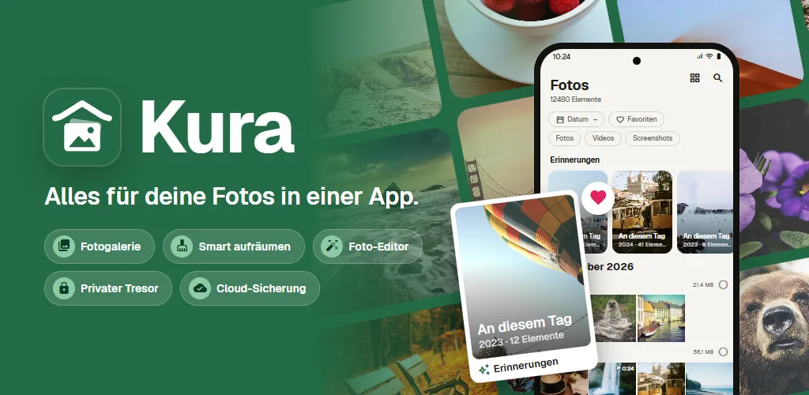
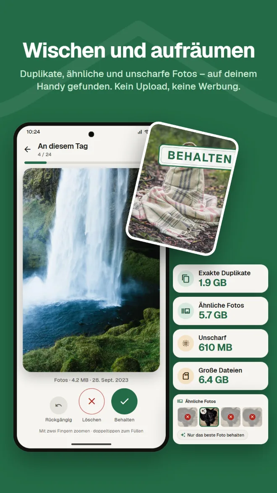
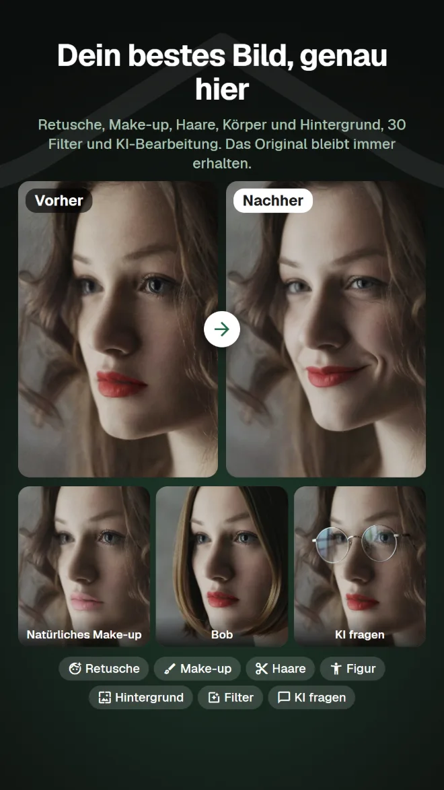
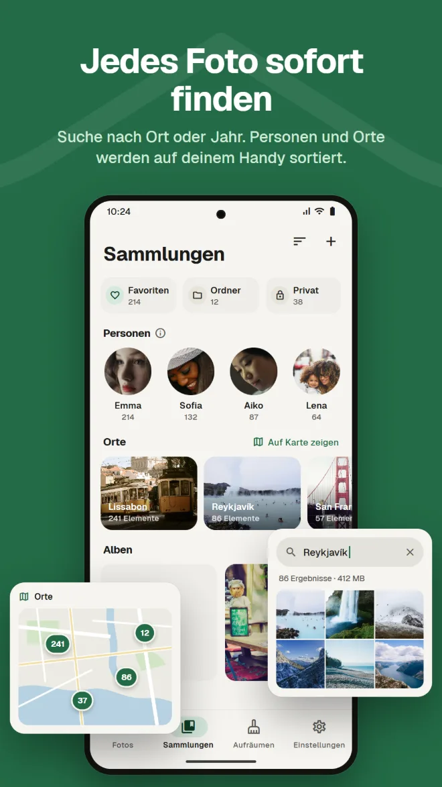
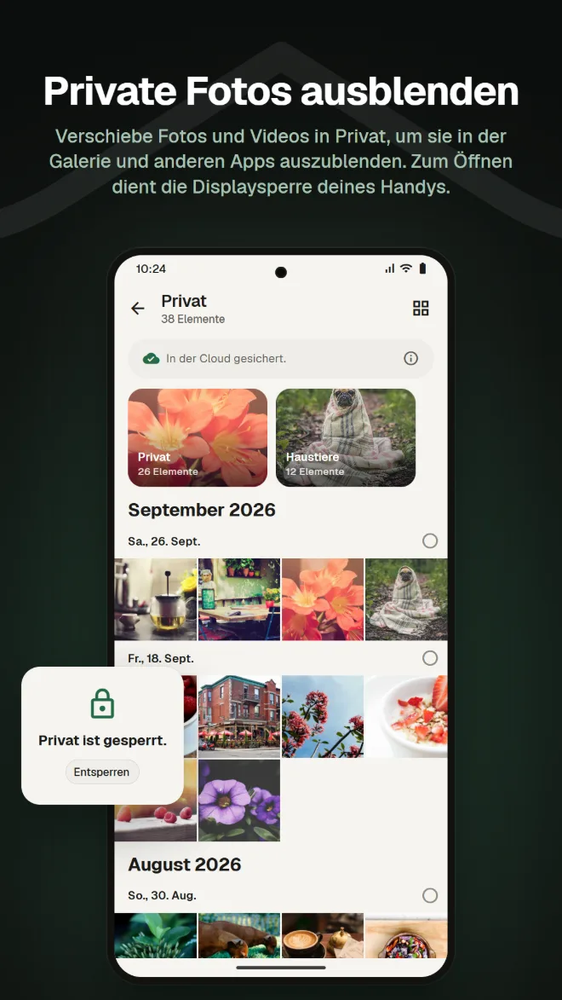
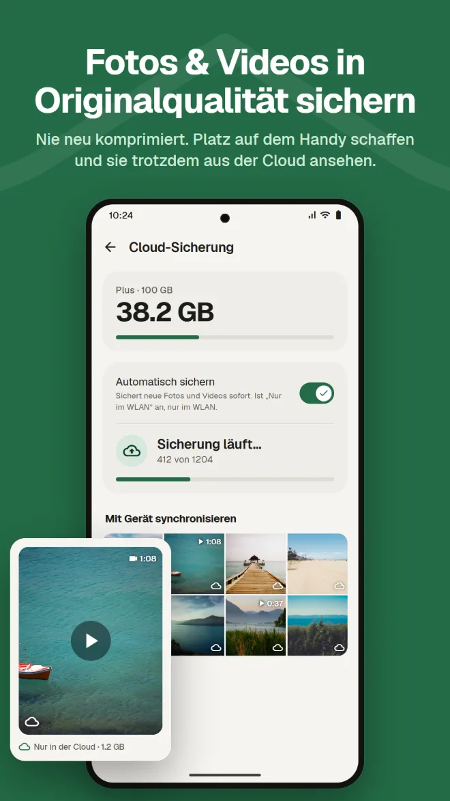
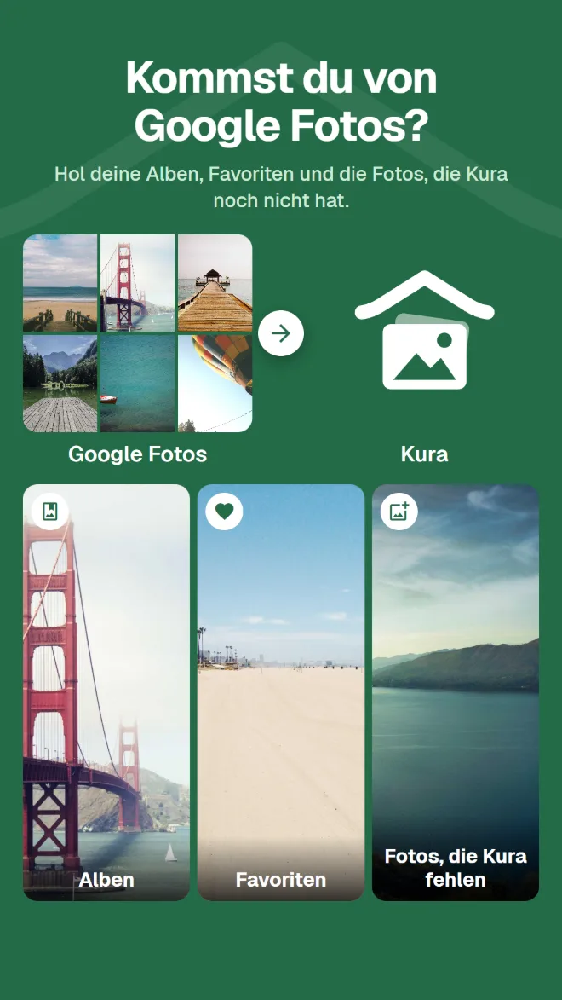

Inhalte durchsuchen
Finde Fotos nach Ort, nach dem, was darauf ist, oder nach Text im Bild.
Galerie, Aufräumen, KI-Bearbeitung, privater Bereich, Backup und Umzug von Google Fotos. Mit Kura brauchst du nicht für alles eine eigene App.
Ab Android 11 · Ansehen, Sortieren und Löschen kostenlos · Mit Google anmelden

Eine Galerie zum Ansehen, ein Cleaner für mehr Platz, noch eine App zum Bearbeiten, noch ein Dienst fürs Backup. Bei jedem Wechsel suchst du dasselbe Foto von vorn.
Kura erledigt alles in einer Mediathek.
Dieselben Fotos am selben Ort ansehen, aufräumen, bearbeiten und sichern.
Von der Mediathek über Aufräumen und Bearbeiten bis zu Umzug und Backup.
Kura findet exakte Duplikate, ähnliche Fotos, unscharfe Aufnahmen und große Dateien auf deinem Handy. Nach rechts wischen zum Behalten, nach links zum Löschen – und du siehst sofort, wie viel Platz frei wird.

Retusche, Formen, Make-up, Haare und Hintergrund, dazu 30 Filter, Anpassungen und Zuschneiden. Mit Filtern, die Essen lecker aussehen lassen, und Körper-Tools für die ganze Figur. Gespeichert wird immer eine Kopie, das Original bleibt erhalten.

Ein Raster nach Datum, mit Erinnerungen vom selben Tag in früheren Jahren. Suche nach Ort, nach dem, was auf dem Foto ist, oder nach Text im Bild – Gesichter werden auf deinem Handy nach Person gruppiert.

Verschiebe Fotos und Videos in Privat, um sie in der Galerie und anderen Apps auszublenden. Zum Öffnen dient die Displaysperre deines Handys.

Fotos und Videos ohne erneute Komprimierung sichern. Gesicherte Kopien vom Handy entfernen, um Platz zu schaffen; in der Cloud bleiben sie sichtbar.

Schick einfach die .zip-Datei aus Google Takeout über die App oder die Web-App. Kura holt deine Alben, Favoriten und die Fotos, die Kura noch nicht hat. Der Kura-Server entpackt sie im Hintergrund, du kannst also App und Browser schließen.

Fotos in deiner Kura-Cloud kannst du in der Web-App genau wie in der App ansehen, ordnen, aufräumen, bearbeiten, teilen und hochladen. Favoriten bleiben mit der App synchron.
Web-App öffnenMit Google anmelden · Auf Englisch und Japanisch
Alles, was du von deiner täglichen Galerie erwartest.
Finde Fotos nach Ort, nach dem, was darauf ist, oder nach Text im Bild.
Gesichter auf deinem Handy nach Person gruppiert, und deine Fotos auf einer Karte.
Fotos vom selben Tag in früheren Jahren, ganz oben in deiner Mediathek.
Helligkeit und Farbe anpassen, Zuschneiden und Pinsel, dazu Filter für Essen.
Mit Ablaufdatum und Passwort versehen und an Leute ohne die App schicken.
Bei jedem Öffnen mit der Displaysperre bestätigen. Privat lässt sich auch ausblenden.
Installieren, und deine Fotos erscheinen schon geordnet.
Bei Google Play laden (ab Android 11)
„Alle zulassen“ wählen, um die ganze Mediathek zu laden
Mit deinem Google-Konto anmelden
Sofort sortieren; Backup dazunehmen, wenn du es brauchst
Keine Werbung. Du zahlst nur, wenn du die Cloud nutzt.
Alles auf deinem Handy
Monatlich über Google Play. Jederzeit kündbar
Google Play zeigt die Preise in deiner Landeswährung an.
Fotos verlassen dein Handy nur, wenn du etwas tust, das sie erkennbar irgendwohin sendet.
Duplikat-, Unschärfe-, Gesichts-, Objekt- und Texterkennung laufen auf deinem Handy. Kein Foto wird zum Sortieren hochgeladen.
Android fragt nach, bevor eine Datei gelöscht wird, und Gelöschtes bleibt im Papierkorb, bis du ihn leerst.
Beim Anmelden speichert unser Server nur die ID deines Google-Kontos. Dein Name und deine E-Mail-Adresse werden nie gesendet.
Bei der KI-Bearbeitung wird nur der Bereich um das Gesicht gesendet, und weder das Foto noch das Ergebnis wird auf dem Server gespeichert.
Keine Werbung · Ansehen, Sortieren und Löschen kostenlos